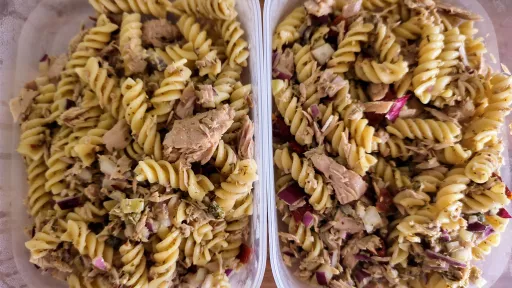

Storecupboard pasta salad

This pasta salad makes a quick and healthy lunch, or is perfect prepared ahead for a picnic or lunchbox
Servings: 2
Total: 15 mins
Ingredients
- 2 tsp finely chopped red onion
- 1 tsp capers
- 1 tbsp pesto
- 2 tsp olive oil
- 1x 185 g can tuna in spring water, drained
- 100 g leftover pasta shapes
- 3 sundried tomatoes, chopped
Instructions
- Mix the
onion2 tsp
, capers1 tsp
, pesto1 tbsp
and oil2 tsp
. Flake the tuna1x 185 g can
into a bowl with the pasta100 g
and tomatoes3
, then stir in the pesto1 tbsp
mix.
-
kcal
189
-
fat
7 g
-
saturates
2 g
-
carbs
12 g
-
sugar
2 g
-
fibre
2 g
-
protein
19 g
-
salt
0.91 g
www.bbcgoodfood.com
Short Link
Long Link